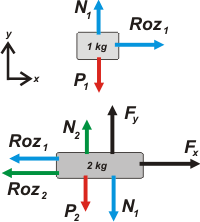

NO ME SALEN
EJERCICIOS RESUELTOS DE FÍSICA DEL CBC
Dinámica. Fuerzas de vínculo. Rozamiento.
|
|

|
Adicional 36*- La caja de 2 kg de masa es arrastrada sobre una superficie
horizontal mediante una fuerza de 10N que forma un ángulo de
53° con la horizontal. Sobre la caja está apoyado un bloque, de
masa 1 kg, que no desliza respecto de ella. Los coeficientes de
rozamiento estático y dinámico, de todas las superficies (bloque-caja
y caja-piso) valen: μe = 0,4 y μd = 0,2. |
a) plantear el diagrama de cuerpo libre de la caja y del bloque y
calcular la aceleración del sistema.
b) Calcular la máxima aceleración que puede tener el sistema sin que el bloque de 1 Kg deslice sobre la
caja. |
 |
Como siempre, empezamos TODOS los problemas de dinámica haciendo un DCL. Si no lo hacés, perdés. Si lo hacés mal, perdés. En este caso lo pide el enunciado... tomá.
Voy a llamar 1 al bloque y 2 a la caja de abajo. |
|  |
Acá tenés un bonito ejemplo que desmiente esa creencia popular de que la fuerza de rozamiento se opone al movimiento. El bloque 1 se mueve hacia adelante gracias a que la fuerza de rozamiento que le hace la caja de abajo le hace hacia adelante. En este caso es a favor del movimiento, no en contra.
En celeste te puse la fuerza normal o (perpendicular) a la superficie de contacto, la que la caja de abajo y el bloque se hacen entre sí, N1. En verde la fuerza con que se tocan la caja 2 y el piso, N2.
A las fuerzas de rozamiento le puse el mismo color de las fuerzas de contacto con las que estás relacionadas.
Tené en cuenta que FX = F cos 53º y FY = F sen 53º. |
|
|
|
| Hacemos la clásica: después del DCL vienen las ecuaciones de Newton |
|
| Caja 1 |
→ ΣFx = m1 ax → |
Roz1 = m1 . a |
[1] |
| Caja 1 |
→ ΣFy = m1 ay → |
N1 — P1 = 0 |
[2] |
| Caja 2 |
→ ΣFx = m2 ax → |
FX — Roz1 — Roz2 = m2 . a |
[3] |
| Caja 2 |
→ ΣFy = m2 ay → |
Fy + N2 — N1 — P2 = 0 |
[4] |
| Roz2 |
→ |
Roz2 = μd . N2 |
[5] |
|
|
El rozamiento 1, que mueve al bloque no tiene ecuación, ya que no se trata del valor máximo... eso lo vamos a usar en la segunda parte del ejercicio.
Sumando miembro a miembro la [1] con la [3] nos queda las sencilla ecuación
FX — Roz2 = (m1 + m2 ) . a
En está meto la [5].
FX — μd . N2 = (m1 + m2 ) . a
Reemplazo las normales con las ecuaciones [2] y [4].
FX — μd . (P1 + P2 — Fy ) = (m1 + m2 ) . a
De acá despejo la aceleración y la calculo:
a = FX — μd . (P1 + P2 — Fy ) / (m1 + m2 )
a = 6 N — 0,2 . (10 N + 20 N — 8 N) / 3 kg
|
|
|
|
La aceleración máxima del conjunto sin que la caja de arriba deslice surge del límite que pone la fuerza de rozamiento estática máxima entre las dos cajas. |
|
| Roz |
→ |
Roz1M = μe . N1 |
[6] |
|
|
La junto con la [1], Reemplazo N1 y calculo.
m1 . aM = μe . P1
aM = μe . P1 / m1
aM = 0,4 . 10 N / 1 kg
|
|
|
|
| No fue tan dramático. |
|
| Este ejercicio fue tomado en el 2do. examen parcial, el 18 de junio de 2013. |
|
 |
| DESAFIO: |
|
| Algunos derechos reservados.
Se permite su reproducción citando a ricuti, poniendo la dirección de web de donde lo sacaste. Última actualización jun-13. Buenos Aires, Argentina. |
|
|
|